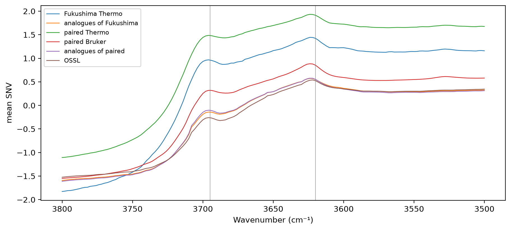

import pandas as pd
import matplotlib.pyplot as plt
from scipy.stats import spearmanr
from sklearn.neighbors import NearestNeighbors
from sklearn.preprocessing import StandardScaler
from fastcore.test import *
from soilspecdata.all import load_ossl
from soilspectfm.preprocessing import SNV
from ossl_fuku_transfer.data import *
from ossl_fuku_transfer.moisture import band_heightAl–OH band
Measure the sharp Al–OH band near 3620 cm⁻¹, which the OSSL Kex model relies on most, in the Fukushima Thermo and Bruker spectra and their OSSL analogues, and test whether it still tracks Kex
17_importance found that the OSSL Kex model relies most densely on 3600–3700 cm⁻¹, with the Al–OH stretching band of illite, smectite and kaolinite near 3620 cm⁻¹ the most important window. 16_moisture found the Thermo spectra much higher than their OSSL analogues between 3450 and 3700 cm⁻¹. A broad absorption there could hide the sharp band. This notebook measures the band directly.
The module part uses small random arrays, so it runs without the data. The sections from Data onwards read OSSL and the Fukushima data, and are marked #| fukudata.
Band depth
band_depth measures how sharp a band is: minus the minimum of the Savitzky-Golay second derivative within half cm⁻¹ of center. A sharp band gives a deep negative second derivative, and a broad absorption underneath it adds almost nothing. A window of 11 points is 22 cm⁻¹ on the 2 cm⁻¹ grid. sharp_bands holds the two bands measured here, with the ranges and anchors that band_height uses for the second measure:
band_depth
def band_depth(
X, # Spectra, one per row
wns, # Wavenumbers of the columns of `X`, evenly spaced
center, # Band centre, in cm⁻¹
half:int=6, # Half-width of the search range, in cm⁻¹
window:int=11, # Savitzky-Golay window, in points
)->numpy.ndarray: # One depth per spectrum, positive for a bandMinus the minimum of the second derivative of X within half of center
wns_syn = np.arange(3400, 3800, 2.)
broad = np.exp(-0.5 * ((wns_syn - 3500) / 150)**2)
sharp = np.exp(-0.5 * ((wns_syn - 3620) / 8)**2)
d = band_depth(np.stack([broad, broad + 0.1 * sharp, 3 * broad + 0.1 * sharp]), wns_syn, 3620)
test_eq(d[0] < 0.02 * d[1], True)
test_close(d[1], d[2], eps=0.05 * d[1])Data
SNV spectra on 650–3996 cm⁻¹, the range the Bruker exports cover: the Fukushima Thermo spectra of the current selection, the Thermo and Bruker spectra of the paired soils, 10,000 random OSSL spectra, and each Fukushima soil’s OSSL analogue, matched as in 12_wetchem. Kex and clay come from fuku_shared_props and ossl_shared_props:
pw = shared_wns[:-1]
snv = SNV()
om = load_ossl().mir(wmin=shared_wns[0], wmax=shared_wns[-1])
ossl = ossl_shared_props(om)
op = prop_features(ossl)
sc_p = StandardScaler().fit(op)
nn = NearestNeighbors(n_neighbors=1).fit(sc_p.transform(op))
opos = pd.Series(np.arange(len(om.sample_ids)), index=om.sample_ids)
def analogues(ids):
fp = prop_features(fuku_shared_props(ids))
return fp.index, op.index[nn.kneighbors(sc_p.transform(fp))[1][:, 0]]
f_ids, f_an = analogues(sample_ids())
p_ids = [i for i in sorted(bruker_files(), key=int) if i not in excluded and i in set(spa_files())]
p_ids, p_an = analogues(p_ids)
o_sub = np.random.default_rng(0).choice(len(om.sample_ids), 10000, replace=False)
spec = {'Fukushima Thermo': snv.fit_transform(load_fuku(pw, list(f_ids)).spectra),
'analogues of Fukushima': snv.fit_transform(om.spectra[opos[f_an].to_numpy()][:, :-1]),
'paired Thermo': snv.fit_transform(load_fuku(pw, list(p_ids)).spectra),
'paired Bruker': snv.fit_transform(load_bruker(pw, list(p_ids)).spectra),
'analogues of paired': snv.fit_transform(om.spectra[opos[p_an].to_numpy()][:, :-1]),
'OSSL': snv.fit_transform(om.spectra[o_sub][:, :-1])}
fprops = fuku_shared_props(list(f_ids)); pprops = fuku_shared_props(list(p_ids))
props = {'Fukushima Thermo': fprops, 'analogues of Fukushima': ossl.loc[f_an], 'paired Thermo': pprops, 'paired Bruker': pprops,
'analogues of paired': ossl.loc[p_an], 'OSSL': ossl.iloc[o_sub]}
{k: len(v) for k, v in spec.items()}{'Fukushima Thermo': 1385,
'analogues of Fukushima': 1385,
'paired Thermo': 375,
'paired Bruker': 375,
'analogues of paired': 375,
'OSSL': 10000}The mean SNV spectrum of each set between 3500 and 3800 cm⁻¹, with the two bands marked:
m = (pw >= 3500) & (pw <= 3800)
fig, ax = plt.subplots(figsize=(9, 4), layout='constrained')
for k, S in spec.items(): ax.plot(pw[m], S[:, m].mean(0), lw=0.9, label=k)
for c, *_ in sharp_bands.values(): ax.axvline(c, lw=0.5, c='grey')
ax.invert_xaxis(); ax.set_xlabel('Wavenumber (cm⁻¹)'); ax.set_ylabel('mean SNV'); ax.legend(fontsize=8);
Is the band flattened?
The median depth and height of each band in each set, and, for the pairs, the share in which the Fukushima spectrum has the deeper band than its analogue:
depth = {b: {k: band_depth(S, pw, c) for k, S in spec.items()} for b, (c, *_) in sharp_bands.items()}
height = {b: {k: band_height(S, pw, rng_, lo, hi) for k, S in spec.items()} for b, (_, rng_, lo, hi) in sharp_bands.items()}
tab = pd.DataFrame({(b, meas): {k: np.median(v) for k, v in d[b].items()} for b in sharp_bands for meas, d in (('depth', depth), ('height', height))})
display(tab.round(4))
pd.DataFrame({b: {'Fukushima Thermo deeper than analogue': (depth[b]['Fukushima Thermo'] > depth[b]['analogues of Fukushima']).mean(),
'paired Thermo deeper than analogue': (depth[b]['paired Thermo'] > depth[b]['analogues of paired']).mean(),
'paired Bruker deeper than analogue': (depth[b]['paired Bruker'] > depth[b]['analogues of paired']).mean(),
'paired Thermo deeper than Bruker': (depth[b]['paired Thermo'] > depth[b]['paired Bruker']).mean()} for b in sharp_bands}).round(3)| Al–OH 3620 | kaolinite 3695 | |||
|---|---|---|---|---|
| depth | height | depth | height | |
| Fukushima Thermo | 0.0104 | 0.1754 | 0.0218 | 0.6172 |
| analogues of Fukushima | 0.0072 | 0.1567 | 0.0159 | 0.2841 |
| paired Thermo | 0.0087 | 0.1452 | 0.0190 | 0.5693 |
| paired Bruker | 0.0119 | 0.1978 | 0.0185 | 0.4566 |
| analogues of paired | 0.0079 | 0.1638 | 0.0167 | 0.3086 |
| OSSL | 0.0069 | 0.1551 | 0.0148 | 0.2232 |
| Al–OH 3620 | kaolinite 3695 | |
|---|---|---|
| Fukushima Thermo deeper than analogue | 0.679 | 0.733 |
| paired Thermo deeper than analogue | 0.533 | 0.579 |
| paired Bruker deeper than analogue | 0.709 | 0.557 |
| paired Thermo deeper than Bruker | 0.117 | 0.643 |
Does the band track Kex?
The Spearman correlation of each band’s depth with Kex, and with clay as a check, in each set. Clay is missing for some samples, and each correlation uses the samples that have the property:
def rho(x, y):
ok = np.isfinite(y)
return spearmanr(x[ok], y[ok])[0] if ok.sum() > 20 else np.nan
pd.DataFrame({(b, p): {k: rho(depth[b][k], props[k][p].to_numpy(dtype=float)) for k in spec} for b in sharp_bands for p in ('K', 'clay')}).round(3)| Al–OH 3620 | kaolinite 3695 | |||
|---|---|---|---|---|
| K | clay | K | clay | |
| Fukushima Thermo | -0.089 | -0.186 | -0.033 | -0.242 |
| analogues of Fukushima | 0.034 | 0.381 | 0.138 | 0.453 |
| paired Thermo | -0.168 | -0.083 | -0.141 | -0.153 |
| paired Bruker | -0.101 | 0.062 | -0.070 | 0.177 |
| analogues of paired | -0.044 | 0.474 | 0.056 | 0.512 |
| OSSL | -0.131 | 0.300 | 0.015 | 0.460 |
For the paired soils, the Spearman correlation between the Thermo and Bruker depths of each band, which shows whether the two instruments rank the soils alike:
{b: round(float(spearmanr(depth[b]['paired Thermo'], depth[b]['paired Bruker'])[0]), 3) for b in sharp_bands}{'Al–OH 3620': 0.84, 'kaolinite 3695': 0.655}By soil type
The same depths and correlations by Fukushima soil type, for the current selection and their analogues, and for OSSL split into Andisols and other soils. Soil types with fewer than 30 samples with clay are left out of the clay correlations:
soil = fprops['soil'].to_numpy()
rows = {}
for s in pd.Series(soil).dropna().value_counts().index:
msk = soil == s
for k, pk in (('Fukushima Thermo', fprops), ('analogues of Fukushima', ossl.loc[f_an])):
r = {'n': int(msk.sum()), 'n with clay': int(np.isfinite(pk['clay'].to_numpy(dtype=float)[msk]).sum())}
for b in sharp_bands:
r[f'{b} depth'] = np.median(depth[b][k][msk])
for p in ('clay', 'K'):
y = pk[p].to_numpy(dtype=float)[msk]
ok = np.isfinite(y)
r[f'{b} vs {p}'] = spearmanr(depth[b][k][msk][ok], y[ok])[0] if ok.sum() >= 30 else np.nan
rows[s, k] = r
oa = props['OSSL']['andisol'].to_numpy()
for s, msk in (('Andisols', oa), ('other soils', ~oa)):
r = {'n': int(msk.sum()), 'n with clay': int(np.isfinite(props['OSSL']['clay'].to_numpy(dtype=float)[msk]).sum())}
for b in sharp_bands:
r[f'{b} depth'] = np.median(depth[b]['OSSL'][msk])
for p in ('clay', 'K'):
y = props['OSSL'][p].to_numpy(dtype=float)[msk]
ok = np.isfinite(y)
r[f'{b} vs {p}'] = spearmanr(depth[b]['OSSL'][msk][ok], y[ok])[0] if ok.sum() >= 30 else np.nan
rows[s, 'OSSL'] = r
pd.DataFrame(rows).T.round(3)| n | n with clay | Al–OH 3620 depth | Al–OH 3620 vs clay | Al–OH 3620 vs K | kaolinite 3695 depth | kaolinite 3695 vs clay | kaolinite 3695 vs K | ||
|---|---|---|---|---|---|---|---|---|---|
| Lowland soil | Fukushima Thermo | 904.0 | 631.0 | 0.011 | -0.307 | -0.125 | 0.022 | -0.354 | -0.065 |
| analogues of Fukushima | 904.0 | 895.0 | 0.007 | 0.284 | 0.061 | 0.016 | 0.388 | 0.183 | |
| Andosols | Fukushima Thermo | 213.0 | 146.0 | 0.009 | 0.137 | 0.095 | 0.019 | 0.055 | 0.139 |
| analogues of Fukushima | 213.0 | 212.0 | 0.007 | 0.532 | 0.085 | 0.014 | 0.542 | 0.117 | |
| Forest soil | Fukushima Thermo | 137.0 | 96.0 | 0.011 | -0.108 | -0.156 | 0.022 | -0.201 | -0.126 |
| analogues of Fukushima | 137.0 | 136.0 | 0.007 | 0.606 | -0.053 | 0.016 | 0.589 | 0.056 | |
| Peat soil | Fukushima Thermo | 66.0 | 45.0 | 0.009 | -0.111 | -0.268 | 0.021 | -0.199 | -0.215 |
| analogues of Fukushima | 66.0 | 62.0 | 0.008 | 0.536 | 0.045 | 0.016 | 0.636 | 0.097 | |
| Red yellow soil | Fukushima Thermo | 46.0 | 38.0 | 0.012 | 0.321 | -0.091 | 0.023 | -0.057 | -0.056 |
| analogues of Fukushima | 46.0 | 45.0 | 0.008 | 0.449 | -0.108 | 0.017 | 0.455 | 0.013 | |
| Glay soil | Fukushima Thermo | 16.0 | 13.0 | 0.009 | NaN | NaN | 0.021 | NaN | NaN |
| analogues of Fukushima | 16.0 | 16.0 | 0.007 | NaN | NaN | 0.017 | NaN | NaN | |
| Andisols | OSSL | 201.0 | 179.0 | 0.004 | 0.468 | 0.033 | 0.008 | 0.442 | 0.112 |
| other soils | OSSL | 9799.0 | 6517.0 | 0.007 | 0.284 | -0.132 | 0.015 | 0.451 | 0.014 |
The soil types recorded for the paired soils:
pprops['soil'].value_counts(dropna=False).to_dict(){'Lowland soil': 189,
'Andosols': 114,
'Forest soil': 34,
'Red yellow soil': 18,
'Peat soil': 16,
'Glay soil': 4}Findings
The Al–OH band near 3620 cm⁻¹ is not flattened in the Fukushima spectra. Its median second-derivative depth is 0.0104 in the Fukushima Thermo spectra, against 0.0072 in their OSSL analogues and 0.0069 in OSSL. It is deeper than in the analogue for 68% of the soils. The kaolinite band at 3695 cm⁻¹ is also deeper (0.0218 against 0.0159, in 73% of the pairs). The height above a local baseline gives the same order. For the paired soils, the Bruker spectra show the Al–OH band more deeply than the Thermo spectra (0.0119 against 0.0087), but the two instruments rank the soils alike: their depths correlate at 0.84 for the Al–OH band and 0.66 for the kaolinite band. A broad absorption hiding the band does not explain the transfer failure.
On its own, the depth of the Al–OH band does not track Kex, in OSSL either. Its Spearman correlation with Kex is -0.13 in OSSL, 0.03 in the analogues and -0.09 in the Fukushima Thermo spectra. The OSSL model’s reliance on the 3600 to 3700 cm⁻¹ region (17_importance) therefore goes through combinations with other bands, not through this band’s depth alone.
In OSSL, both bands track clay, and in Fukushima they do not. The depth of the Al–OH band correlates with clay at 0.30 in OSSL and 0.38 in the analogues of the Fukushima soils, and at -0.19 in the Fukushima Thermo spectra. For the kaolinite band, the figures are 0.46, 0.45 and -0.24. For the paired soils, the correlations with clay are near zero on both instruments: -0.08 and 0.06 for the Al–OH band on the Thermo and Bruker spectra, against 0.47 in their analogues. Because the Bruker spectra show the same loss, the instrument does not explain it.
The relation between the clay-mineral bands and the soil properties differs between Fukushima and OSSL soils with the same properties. Two explanations fit: different clay mineralogy, such as more allophane and imogolite in Andosols, which give no sharp band near 3620 cm⁻¹, or a different clay measurement, since Andosols disperse poorly and their clay content tends to be underestimated. Clay is available for 972 of the 1,385 Fukushima soils.
The split by soil type points away from the Andosols. The decoupling is strongest in the Lowland soils, the largest group, with 631 samples with clay. There, the depth of the Al–OH band correlates with clay at -0.31, and the kaolinite band at -0.35, against 0.28 and 0.39 in their analogues. With that many samples, a Spearman correlation has a standard error of about 0.04. The 146 Andosols with clay keep a weak positive relation: 0.14 for the Al–OH band and 0.06 for the kaolinite band, against 0.53 and 0.54 in their analogues. Forest and Peat soils have smaller samples and correlations of -0.11 to -0.20. In every soil type, the analogues show correlations of 0.28 to 0.64.
The Fukushima Andosols have slightly shallower bands than the Lowland soils (median Al–OH depth 0.009 against 0.011). The OSSL Andisols have much shallower bands than other OSSL soils (0.004 against 0.007), as allophane and imogolite would give. But the Fukushima Andosols are not where the relation with clay breaks most. Allophane in Andosols therefore does not explain the decoupling. In the Lowland soils, which are mostly paddy fields, more clay goes with shallower sharp clay-mineral bands. What causes this, in mineralogy or in how clay was measured, these data do not show.